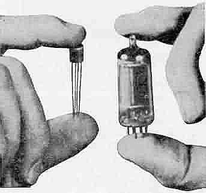

Invensión del transitor
El transistor fue creado en 1947 por los científicos William Shockley, John Bardeen y Walter Brattain en los Bell Labs de Estados Unidos. La invención del transistor fue un hito importante en la historia de la electrónica, y ha tenido un impacto profundo en el desarrollo de la tecnología moderna. El primer transistor era un dispositivo pequeño, del tamaño de un clip de papel, y consistía en una fina capa de germanio con dos contactos. Los científicos descubrieron que podían controlar el flujo de corriente a través del germanio mediante un tercer contacto, lo que les permitió crear un dispositivo que podía actuar como un interruptor o como un amplificador. La invención del transistor fue un gran paso hacia la creación de dispositivos electrónicos más pequeños, más fiables y más económicos, y allanó el camino para la creación de la tecnología moderna de la información y las comunicaciones.
La era antes del transitor
Antes del transistor, los circuitos electrónicos se basaban en tubos de vacío, que eran grandes, frágiles, costosos y consumían mucha energía. Los tubos de vacío también eran propensos a fallas y debían ser reemplazados regularmente. El desarrollo del transistor revolucionó la industria electrónica al ofrecer un dispositivo más pequeño, más confiable y más eficiente.
La invención del transistor fue el resultado de décadas de investigación sobre los materiales semiconductores, que tienen la propiedad de conducir la electricidad en algunas condiciones y de aislarla en otras. En los años 30, el físico alemán Julius Edgar Lilienfeld patentó el concepto de un "transistor" hecho de materiales semiconductores, pero nunca construyó uno funcional. En los años 40, los científicos de los laboratorios Bell trabajaban en la tecnología de los tubos de vacío cuando comenzaron a investigar los semiconductores
Los primeros transistores
El primer transistor que construyeron los investigadores de los laboratorios Bell fue un dispositivo de punto de contacto hecho de germanio. En este dispositivo, dos electrodos de metal se colocaron en contacto con una muestra de germanio, y el tercer electrodo se conectó a una fuente de alimentación. Cuando se aplicó una tensión a los electrodos de metal, se observó que la corriente fluyó a través del germanio, lo que demostró la amplificación de la señal. Los investigadores obtuvieron una patente para el transistor en 1948.
El primer uso comercial del transistor fue en un audífono fabricado por la compañía de electrónica Raytheon en 1952. Los transistores se volvieron comunes en la industria electrónica en la década de 1960, y desde entonces han sido utilizados en una amplia gama de aplicaciones, desde radios y televisores hasta computadoras y teléfonos móviles. El desarrollo del transistor también sentó las bases para la revolución de la microelectrónica, que ha llevado a la creación de circuitos integrados que contienen miles o millones de transistores en un solo chip.
Resumen
El transistor es uno de los inventos más importantes de la historia de la electrónica y la informática. Fue desarrollado en 1947 por los físicos John Bardeen, Walter Brattain y William Shockley en los laboratorios Bell de Estados Unidos. Antes del transistor, los circuitos electrónicos se basaban en tubos de vacío, que eran grandes, frágiles, costosos y consumían mucha energía. La invención del transistor revolucionó la industria electrónica al ofrecer un dispositivo más pequeño, más confiable y más eficiente. Desde su invención, los transistores se han utilizado en una amplia gama de aplicaciones, desde radios y televisores hasta computadoras y teléfonos móviles, y han sentado las bases para la revolución de la microelectrónica.